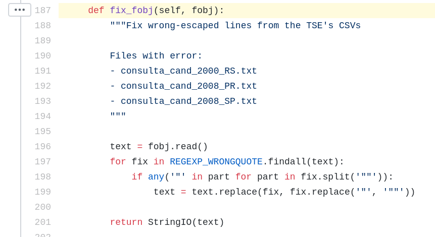
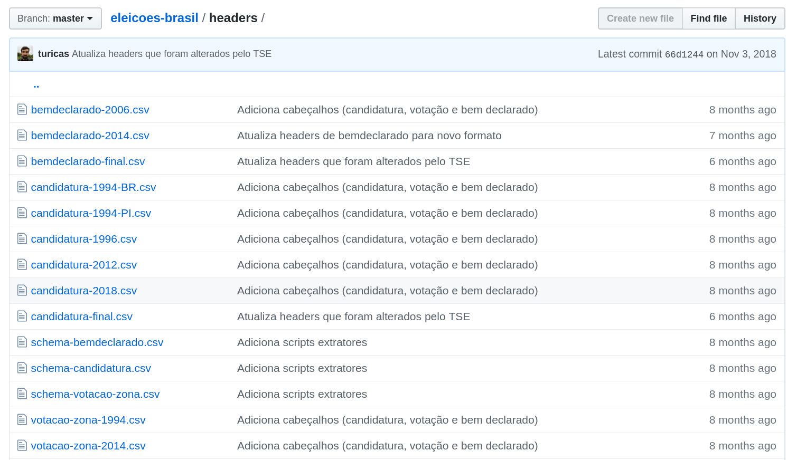

Como usar Python para driblar a falta de transparência: o caso dos CPFs dos candidatos
Turicas aka Álvaro Justen
01 de agosto de 2026
21o Congresso Abraji - São Paulo/SP$ whoami
Turicas, prazer! =)
Sigam-me os bons:
{twitter,
bsky.social,
github,
youtube,
slideshare,
instagram}
/turicas
alvaro@pythonic.cafe

Acesse: pythonic.cafe
Software Livre & Python
(desde 2004/2005)
Brasil.IO
Dados públicos acessíveis
github/turicas/brasil.io
brasil.io/api/datasets
Gênero e Número (2016)
Veja a Edição "Mulheres na Política II"
CruzaGrafos
cruzagrafos.abraji.org.br
Não respeita o formato
Estrelando: TSE

github.com/turicas/eleicoes-brasil
Colunas mudam de nome
Estrelando: TSE

github.com/turicas/eleicoes-brasil
CPFs em 2024 não divulgados
Estrelando: TSE
abraji.org.br